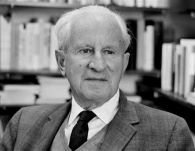
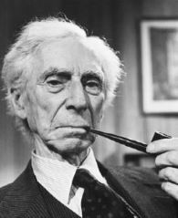

Disparate Impacts
Critical race theory uses identity politics to reduce everyone to physical attributes in order to lay claim to victimhood within groups (as opposed to individuals). These groups constitute "the substratum of the outcasts and outsiders, the exploited and persecuted of other races and other colors" that critical theorist, Herbert Marcuse, identifies as the "new revolutionary base" needed to destabilize the West. Critical race theory advocates for personal narratives over historical facts and objective knowledge due to "disparate impacts." Disparate impacts derives from critical legal theory that says that "neutral, colorblind policies" advocated for in the Civil Rights Act of 1964 lead to unequal outcomes for people of nonwhite races in the U.S. Critical legal theory is the origin of the "systemic racism" idea that permeates critical race theory. Critical race theorists want race and identity politics to be the qualifiers for every legal decision, which would ultimately imbue laws with bias and prejudice. Using schools as an example, faculty would be required to view every problem through racial bias, which does not account for individual behavior that disrupts the classroom and leads to dangerous school environments and lower learning outcomes for good students. Critical race theorists condemn the First Amendment of the U.S. Constitution saying that it is wrong because it does not allow for the suppression of speech, which includes "hate speech." Incidentally, telling the truth about critical race theory is considered "hate speech."

In 1964, Herbert Marcuse published One-Dimensional Man. In this publication, Marcuse proposes the idea of "educational dictatorship." Marcuse saw how race divisions could be stoked and exploited to greater advantage than labor movements.
"Underneath the conservative popular base is the substratum of the outcasts and outsiders, the exploited and persecuted of other races and other colors, the unemployed and the unemployable [...] Their opposition is revolutionary even if their consciousness is not. Their opposition hits the system from without and is therefore not deflected by the system [...] The critical theory of society possesses no concepts which could bridge the gap between the present and its future; holding no promise and showing no success, it remains negative." --Herbert Marcuse (1898-1979)
Educational Dictatorship
Critical race theory adherents claim that "white fragility," the notion of defensiveness and anger that white people supposedly display when it comes to race, is a result of fear of losing racial superiority and status (according to Robin DiAngelo, another academic and author of White Fragility). Supposedly, white fragility is the reason whites are silent or inactive on the subject of racism, which "amounts to complicity." Choosing to be "neutral" is not an option. This can be construed as projecting. Projecting is when an individual or group lays the blame for their own flaws and failings on another individual or group. In contrast, "Psychologically healthy people with a stable sense of self and strong inner security are not racist because they have no need to strengthen their sense of self through group identity. They have no need to define themselves in distinction to--and in conflict with--others. Psychologically healthy people don’t need to resort to racism in the same way that they don’t need to resort to taking drugs." (Steve Taylor, Ph.D., Psychology, Leeds Beckett University, UK)

In 1951, Bertrand Russell, another Frankfurt School affiliate, published The Impact of Science on Society wherein he makes the following statements.
"The social psychologists of the future will have a number of classes of school children on whom they will try different methods of producing an unshakable conviction that snow is black. Various results will soon be arrived at. First, that the influence of home is obstructive. Second, that not much can be done unless indoctrination begins before the age of ten. Third, that verses set to music and repeatedly intoned are very effective. Fourth, that the opinion that snow is white must be held to show a morbid taste for eccentricity. But I anticipate. It is for future scientists to make these maxims precise and discover exactly how much it costs per head to make children believe that snow is black, and how much less it would cost to make them believe it is dark gray. When the technique has been perfected, every government that has been in charge of education for a generation will be able to control its subjects securely without the need of armies or policemen." --Bertrand Russell (1872-1970)